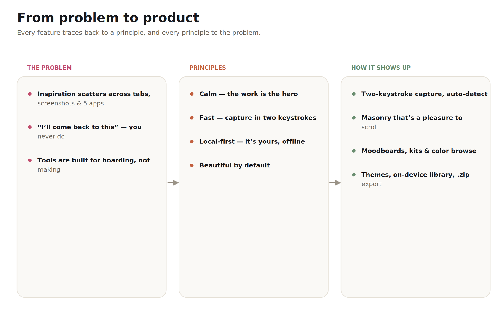
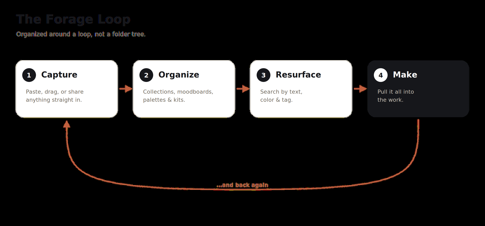
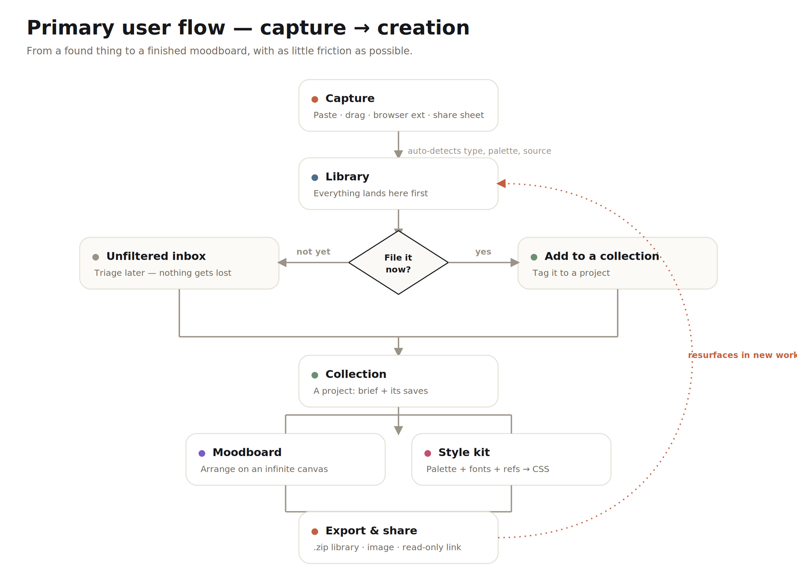
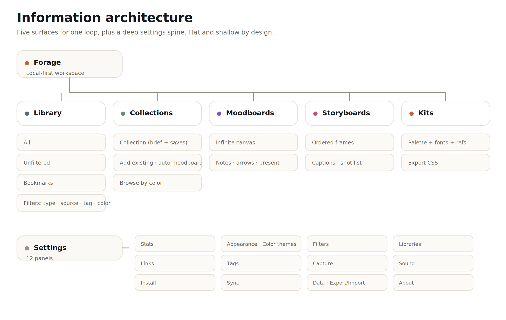
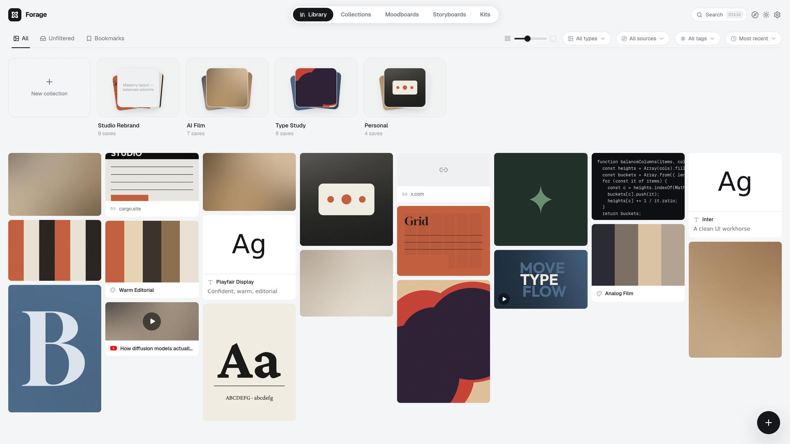
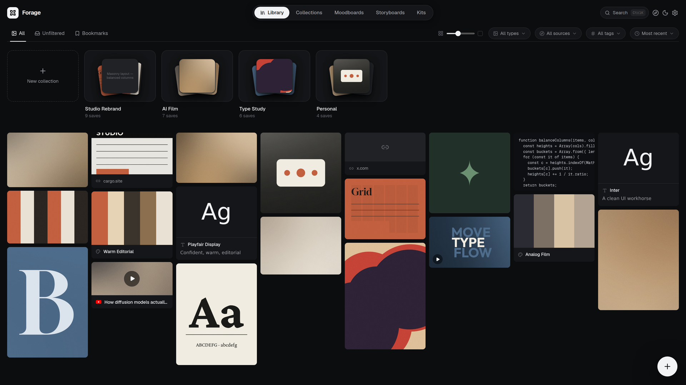
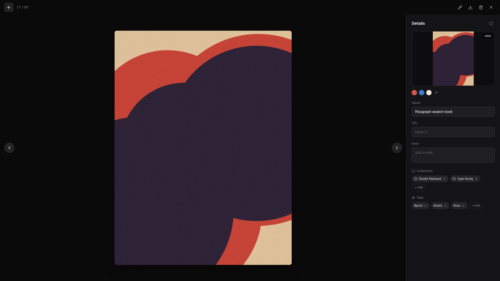
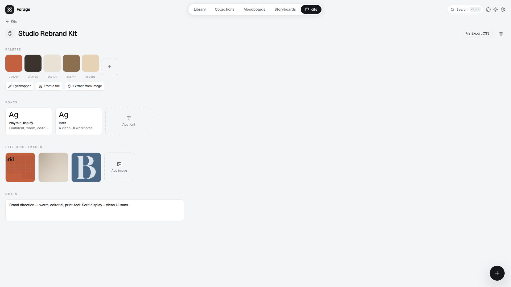
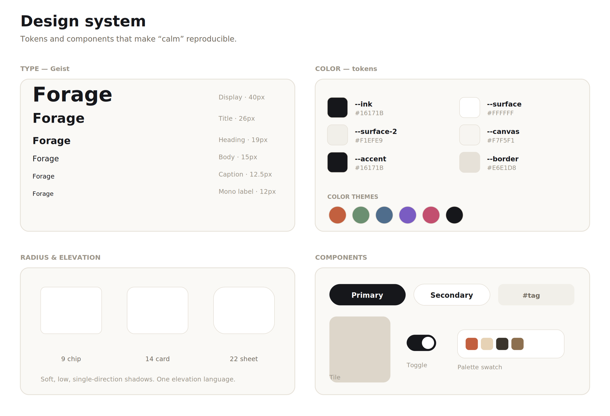
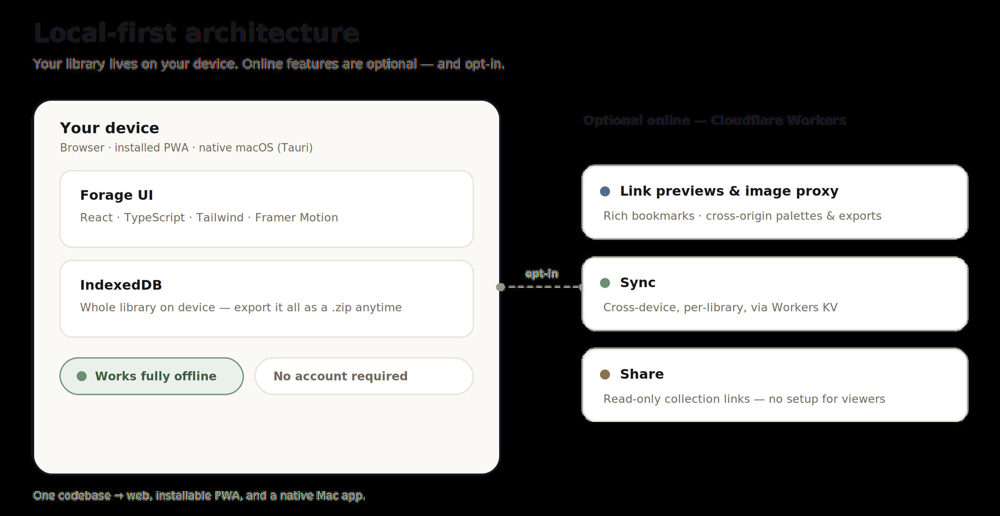

Product design case study · 2026
I designed and built Forage end to end: a fast, local‑first visual library for the things creatives collect — and the things they make from them. It ships to the web, mobile, and macOS from one codebase.
The library — a unified masonry grid of everything you save, at a density you control.
Overview
Forage is a visual library for images, links, video, audio, code, and AI work — and the moodboards, palettes, fonts, and kits people build from them.
It runs in any browser, installs as a mobile app, and ships as a native Mac app. Your library lives on your device and works fully offline. I owned the whole thing: product strategy, interaction and motion design, the design system, and front‑to‑back engineering — a real, shipping product, not a mockup.
The problem
Creative work generates two relentless streams that both leak — and no tool is built to catch both and turn them into something.
YouTube, X threads, articles, pins, sites. “I’ll come back to this.” You almost never do — it scatters across tabs, bookmarks, and five different apps.
AI renders, images, code, design experiments you make yourself. They pile up in Downloads and project folders, then vanish when the project moves on.
Bookmark managers and cloud drives are built to store, not to make. Nothing resurfaces at the moment you’re actually building something.

Every feature traces back to a principle, and every principle to the problem.
Principles
Generous space, soft motion, no noise. The work is the hero — never the chrome.
Capture in two keystrokes. Everything is one shortcut away. Local data feels instant.
Your library is yours, on your device, offline by default. Online features are opt‑in.
A real system: type scale, color tokens, one corner & elevation language, light + dark.
Structure
I rejected the folder hierarchy early — it’s where inspiration goes to die. Instead the whole product is a loop: Capture → Organize → Resurface → Make, then back again. Every surface exists to keep that loop turning with as little friction as possible.


Flow
The core flow has one job: remove friction between saving something and using it. Capture auto‑detects type, palette, and source. The decision “file it now?” is never forced — you can triage later from the inbox. From a collection you’re one click from a moodboard or a brand kit.
Information architecture

Design walkthrough
Paste a link and it unfurls into a rich bookmark — real title, description, preview. Drag images onto the window, paste a snippet, or save from the browser extension and the mobile share sheet. The capture sheet detects the type and samples a palette before you’ve let go of the mouse.
A unified masonry grid holds every type of save at a density you control, with balanced shortest‑column packing so it never looks ragged. Light and dark are first‑class equals — designed together, not one ported to the other.



Open any save into a focused lightbox: its palette sampled with an eyedropper, tags, the collections it lives in, notes, and the “derived from” graph that links an output back to the input that inspired it — the loop, made visible.
Manual collections with a brief, an “Unfiltered” inbox for anything not yet filed, and a color browser — pick a hue and the whole library reorganizes around it. Multi‑select to add a batch, or turn an entire collection into a moodboard in one click.
Pull saves onto a freeform canvas, drag to arrange, add notes and arrows, then present. Multi‑select to drop a batch at once, or auto‑lay‑out a whole collection — ratio‑aware packing means it never overlaps.

Extract and save color palettes (hover to read hex, click to copy), preview fonts in their real typeface — pulled from your installed system fonts or Google Fonts — and bundle a palette, fonts, and references into a style kit you can export as CSS in one click.
Optional color themes re‑tint the whole app, in light or dark. And because the library is genuinely yours, you can export everything as an organized .zip — a folder per collection, assets as real files — or a portable JSON backup, and re‑import either, losslessly.
A command palette (⌘K) searches every save and jumps to any view or command. Full keyboard navigation through the grid. Instant local data. The whole thing is tuned so the fast path is the default path.
Design system
Calm is an engineering problem as much as a visual one. I built Forage on a small set of tokens — a type scale, color tokens, one corner & elevation language — so every new surface inherits the feel instead of re‑inventing it.

Spring‑based and restrained — tiles settle, sheets glide, the theme toggle cross‑fades. Nothing bounces for the sake of it.
Optional, synthesized UI sounds with a “variety” mode and a distinct trash cue — designed, not stock.
A dedicated mobile pass: bottom tab bar, full‑screen sheets, touch targets, pinch‑to‑zoom on the canvas.
Designed to ship
Designing and building it myself meant every interaction survived the trip from Figma to production — nothing got lost in handoff, because there wasn’t one. React + TypeScript + Tailwind + Framer Motion on the front end; IndexedDB for a local‑first library that holds real images without hitting storage limits; optional Cloudflare Workers for sync, sharing, and link previews; and Tauri 2 to ship a native Mac app from the same codebase.

Outcome
Reflection
The biggest lesson: “calm” comes from the engineering — local‑first data, optimistic interactions, and tight motion are what make the app feel quiet. Owning design and build let me make those calls in one head, fast.
Next
Native mobile builds, richer cross‑device sync, and collaborative collections — turning a single‑player tool for taste into a shared one, without losing the calm.